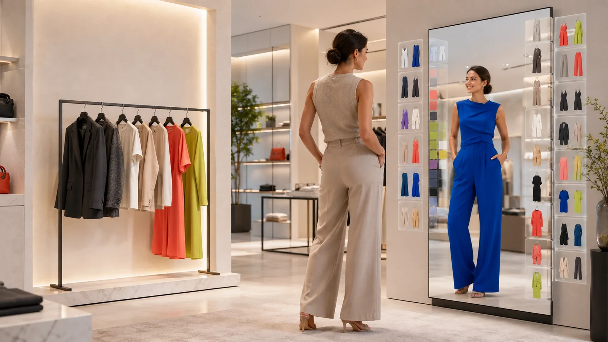

Concept dieline. Three equal 99 mm panels on a 297 × 210 mm sheet, 3 mm bleed, 10 mm safe. In a roll fold the fold-in panel (outside left · inside left) is usually 1.5–3 mm narrower — the Illustrator designer must confirm the printer's fold allowance and move both folds before final artwork. No allowance is baked in. Crops are given as source-pixel rectangles of the 1920 × 1080 masters. CMYK conversion is the designer's/printer's.
Outside · 297 × 210 mm + 3 mm bleedfold-in / intro · back / cta · front cover
Vagora is
Freestanding on the shop floor, the Vagora Mirror starts when someone steps in front of it. Nothing to tap, nothing to learn.
01
Live 3D try-on
The garment moves when the customer moves.
02
More than the rail
Sizes and colourways stay available on screen, checked against live stock.
03
Connected to purchase
Selected garments, sizes and colourways can move with the customer to the till.
For demos and enquiries
hi@5thlayer.co5thlayer.co

Inside · 297 × 210 mm + 3 mm bleedthe customer experience · what changes in the store · beyond the mirror
The customer experience
Vagora renders the selected garment on the customer in live 3D. It tracks their movement in real time while sizes and colourways remain available on screen.
What changes in the store
Beyond the Mirror
Selections reach the till. Customer interest becomes visible. Every mirror is managed from one console.
(01)
Their picks, already at the till.
One scan sends selected garments, colourways and sizes to the customer's phone and the counter.
(02)
See what customers explored.
See what customers browsed, tried, combined, saved and ignored, by store and garment.
(03)
Run every mirror from one console.
Manage catalogue, content and configuration across every store, with sync status and offline alerts in one place.
Starts by itself · nothing to tap
Portrait display · freestanding
Nothing is stored · no face database